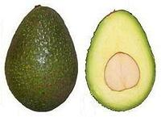
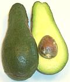

SAFARI
Users
- Avocado - General & History
- Avocado Oil - a very high temperature oil.
- Avocado Leaves - use only pure Mexican varieties.
- Links
Avocado
[Persea americana]
Avocado Types
Botanists divide avocados into three groups:
Mexican:
grow well in arid climates and can stand coldish winters. They are of smaller size with much higher oil content (15% to 30%), more flavor than West Indian varieties and smooth or warty green skins. They are suitable for guacamole and other Southwest and Central American recipes.Guatemalan:
Similar to Mexican varieties in oil content and flavor, these avocados are of moderate size and generally have a rough woody and somewhat loose skin. They are compatible with the California climate but not that of Florida.Florida:
[West Indian] Most are of large size and have smooth skins. They have about half or less the oil content of Mexican / Guatemalan varieties (3% to 15%), and the flesh is more watery and less flavor intense. They are not recommended for guacamole or other Southwest dishes but are fine for Avocado dip (which includes mayonnaise and/or sour cream, while guacamole does not). They work well for West Indian recipes and those of the American South, as well as Philippine and other Tropical cuisines.Hybrid:
Most commercial avocados today are hybrids, West Indian with some Guatemalan in Florida and various mixes of Mexican and Guatemalan in California.
Growing Regions
California
produces 80% or the avocados sold in the U.S and also exports to East Asia where the Hass variety has become popular. Varieties grown in the state are of Mexican and Guatemalan extraction, small but high in oil and flavor. California avocados are available year round, and because they do not ripen until harvested they are warehoused right on the tree.- Florida produces a bit less than 20% of avocados sold in the U.S. They are all West Indian varieties with some hybridization with Guatemalan, but with West Indian characteristics predominating. They are more perishable than the California varieties so are not shipped as widely. They cannot be warehoused on the trees due to hurricanes.
Hawaii
grows a significant avocado crop but mostly for local consumption. Exports are limited mainly to Alaska and non-US winter markets due to USDA APHIS (Animal and Plant Health Inspection Service) requirements.Texas, Louisiana
and other Southern states grow a few for local consumption.Mexico
is the world's largest producer of avocados with 315,000 acres vs. California's 74,000.Indonesia
is now the second largest producer, just ahead of the United States, but exports mainly to Southeast Asian markets. Florida varieties have predominated there due to the wet tropical climate.Worldwide
Mexican/Guatemalan avocados are now grown in Israel, South Africa, New Zealand and Spain, West Indian avocados are grown in humid parts of South America.
Buying, Storing & Using Avocados
Unlike other fruits, the avocado will not soften on the tree. California avocados are "warehoused" by just leaving them on the tree until needed. When picked they are fully mature but will be rock hard. Because of this California allows sale of undamaged windfall, banned here for all other fruits. Florida must sell its avocados immediately when ready. They can't leave them on the trees because of hurricane risk.
Look for avocados that are of uniform color without black or brown spots or bruises. When you buy them they will probably be hard and need to be left out on the counter for a few days until softened. To tell if an avocado is ready, hold it in the palm of your hand and squeeze very gently with your finger tips. You're looking for it to yield slightly but not be mushy.
Florida avocados are ready when you can feel them yield to gentle pressure, California avocados are best left for an additional day. Refrigeration can slow softening but not by much.
Once cut, avocados darken quickly from exposure to air. To fend this off brush the cut surface with citric acid or lemon juice, or press plastic wrap down on the cut to exclude all air. Alternatively just let the cut darken and dry. Just slice off the dark layer when ready to use.
Avocado Varieties - California
The University of California lists around 120 cultivated varieties known in California, but listed here are only ones I've successfully purchased in markets.
Eisenhower
California: I have no idea why this is not the dominant green skin avocado in California. This is a fairly large avocado. The photo specimen was 5 inches long, 3 inches diameter and weighed 11-3/4 ounces with a seed weighing only 1 ounce. This avocado is delicious, ripens evenly, contains no fiber, has a stiff skin that can be peeled easily or used as a cup for eating it with a spoon. It's easy to tell when its ripe (mottled green and black), it slices nicely, but above all, it has a tiny seed and a huge amount of flesh. The grower says they have one tree, but intend to graft more. Purchased at a large farmer's market in Pasadena, California.
Hass
California: this smallish avocado is oval with almost no neck and has an excellent almost smoky flavor highly suited for guacamole and other Southwest and Central American recipes. It has good shelf life and accounts for about 80% of the California crop.The skin is hard, rough, and black, even purplish when ripe. An over-ripe Hass will feel hollow under its stiff skin. The Hass was an accident and nobody knows what exact varieties it is descended from, but it is mostly Guatemalan. Attempts to grow Hass in Hawaii failed. 5 to 12 ounces and available year round.
Lamb Hass
California: This new variety not yet widely distributed. It is very similar to regular Hass but larger and the skin is less pebbly. It is ripe when the skin feels just a little loose. The flesh is rich and creamy with no significant fiber. The skin peels easily and the flesh slices very well.
The photo specimen was 4-1/4 inches long, 3-1/4 inches diameter and
weighed 15-1/2 ounces. It was purchased at a farmer's market in Los
Angeles.
Gwen
California: a mostly Guatemalan variety, oval with a pebbly skin. It's similar to Hass in appearance but a bit larger and the skin remains dark green and somewhat pliable when ripe. Good flavor and makes good guacamole. 6 to 15 ounces and available during the summer months.
Bacon
California: a mostly Mexican variety not as flavorful as Hass but still fine for guacamole and other Southwest recipes. It is pear shaped almost no neck. 6 to 12 ounces and available from fall through spring.
Fuerte
California: this smooth green skinned avocado has very good flavor and is usable for guacamole and other Southwest recipes. It is a mostly Mexican variety, pear shaped with a noticeable neck and smooth medium green skin. This was the original California commercial variety. 5 to 14 ounces and available from late fall through spring.
Kona Sharwil

Hawaii: a Mexican Guatemalan cross, originating from Australia, that dominates Hawaiian avocado production. It is the only Hawaiian grown avocado certified for export to some other states. This avocado has medium yellow flesh, good nutty flavor and ripens green. Hawaiians consider it superior to Californian but little is exported to here because meeting California and USDA APHIS packaging and inspection protocols is a real pain. Sharwil Avocados are also grown to some extent in Australia and New Zealand. Photo adapted from University of California.
Pinkerton
 California & some Florida: this avocado has a relatively long neck, thick flesh, small seed and very dark green slightly pebbly skin. A Guatemalan variety but not as flavorful as some other California varieties. 8 to 18 ounces and available in winter and early spring. When buying Pinkertons, check to make sure the neck is firm as some ripen unevenly and start to spoil from the neck.
Reed
California: this large Guatemalan avocado is oval with no neck and a dark green, slightly pebbly skin. Most production goes to food service distribution rather than to stores. 8 to 22 ounces, available in summer months and early fall. It is ripe when it starts to show a few black spots on the outside and if it feels hollow it is overripe. When ripe the flesh starts to pull away from both the seed and the skin. Flavor is good but not as intense as Hass.
Susan
California - Parentage unknown: This is a very small avocado with good flavor. The skin is paper thin but peelable. When ripe, the seed rattles and the stem end becomes black. The photo specimen was 2-3/4 inches long, 2-1/8 inches diameter and weighted 3-1/2 ounces. The seed weighed 3/4 ounce. Purchased at a farmer's market in Los Angeles.
Zutano
California: a pear shaped Mexican avocado with a prominent neck similar in shape to Fuerte but with a distinctive shiny yellow-green skin. The skin is smooth but very thin, some will peel easily if fully ripe but others will not. The skin is strong enough so the flesh can be scooped out. Zutanos are ripe when the skin turns black in large areas. Shallow dimpling in the black area is normal but it should not look shriveled. Zutanos range from 6 to 14 ounces but the photo specimen was 5 inches long and weighed 10-1/8 ounces, 7 ounces without the pit. Available from September through early winter.
Avocado Varieties - Florida / West Indies
I have few pictures of Florida avocados because Florida growers don't ship to California. This state's strict regulations designed to protect crops from imported pests and disease make it difficult. Florida varieties are not grown in California because they need a much wetter environment than is available here - and they aren't good for guacamole (not enough oil). The only place I've been able to buy them is from a Philippine market in Los Angeles (Eagle Rock).
Fortunately my lack of pictures is made up for by
Pine Island Nursery which has a very excellent set - just
click on their small pictures for a larger view and details.
Bernecker
Florida: a popular very large sized commercial variety with high quality fruit and good yield. It has a smooth medium green skin and elongated mango shape. 24 to 40 ounces and available from August to October.
Beta
Florida: very popular commercially for very high yield and fairly good quality fruit. It has a smooth medium green skin and neckless shape. 14 to 24 ounces and available from July to September.
Brogdon
Florida, Gulf Coast: with its smooth purple skin and elongated shape this avocado is easy to recognize. It is considered of very high quality and is grown from Florida to New Orleans. 14 to 24 ounces, available from September through November.
Choquette
Florida: a giant size avocado with dark smooth green skin and neckless shape. With high quality fruit, heavy yield and large size it is becoming a commercial favorite. 24 to 40 ounces and available from October through December.
Doni
Florida: a popular commercial avocado of good quality and very large size. It has a smooth shiny skin and a neckless but elongated mango like shape. It is particularly popular because it can be fully harvested before the hurricane season. 24 to 32 ounces and available from May through June.
Hall
Hall has fallen out of favor with commercial growers in favor of Choquette which has a longer season and higher yield but is still grown in some areas because its cold tolerance is superior. The photo specimen was 7-3/4 inches long, 3.9 inches diameter and weighed just under 29 ounces.
This avocado was cut at the peak of edibility when the smooth emerald skin
became splotched with black and the flesh had just started pulling away from
the skin. Eating quality and flavor of the yellow-green flesh was excellent
and it peels almost without effort. The flesh is soft and smooth without
fiber but firm enough to slice well and hold its shape. This specimen was
obtained from a Philippine market in Los Angeles (Eagle Rock). Available
October and November.
Miguel
Florida: a popular commercial variety producing very large, high quality avocado with a smooth green skin and a neckless mango like shape. 24 to 32 ounces, available August through September.
Monroe
Florida: a popular cold tolerant variety producing high quality fruit with smooth green skin and a neckless mango like shape. 16 to 24 ounces, available November through January.
Russell
Florida: this very large avocado is popular in the Latin communities and easily recognized by its extremely elongated gourd-like shape. Very good flavor but only moderately popular with growers due to moderate yield. 24 to 40 ounces, available July through August.
Simmonds
Florida: a very popular early season avocado for both commercial and home growers. It has smooth green skin and elliptical shape. 16 to 24 ounces, available June through August.
Avocado Oil
Avocado Oil - California
[Persea americana]
Avocado Oil has recently (2013) become widely available at prices
comparable to quality Olive Oil. Olive oil has a slightly buttery taste,
and a smoke point of 520°F/270°C, considerably higher than any other
available oil. It's health profile is very similar to Olive Oil, and it
is even more resistant to rancidity. Truly the "go-to" oil for very
high temperature applications.
Avocado Leaves
Avocado Leaves - Mexican
[Persea americana var drymifolia]
Avocado leaves are much used in parts of Mexico as a flavoring. For this purpose only leaves of Mexican type avocados (var drymifolia) are useful, as Guatemala and Florida varieties lack the anise-like aroma and flavor.
Avocado leaves are used both fresh and dried. Dried ones are most available north of the Mexican border and can be found in markets serving Mexican communities. Dried leaves are generally toasted on a hot dry comal until aromatic and are then crushed to powder. They may be used in soups, stews and other dishes to impart a light anise flavor.
Toxicity: The University of California at Davis found
that goats were sickened by eating large quantities of Guatemalan variety
avocado leaves. This effect was not found with Mexican variety leaves.
While it's highly unlikely that culinary quantities of any avocado leaf
would have a detectable effect on humans, for flavor the Mexican ones
are the ones you want anyway.
Photo by Ethel Aardvark distributed under license
Creative Commons
Attribution 3.0 Unported.
Links
- A2 - California and other Avocados - University of California.
- A6 - Florida Avocados - University of Florida.
- A8 - Florida Avocados - Pine Island Nursery.